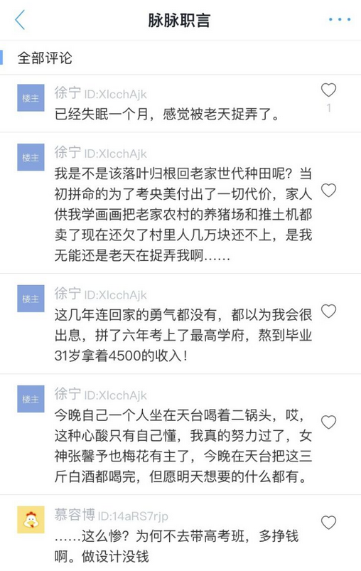
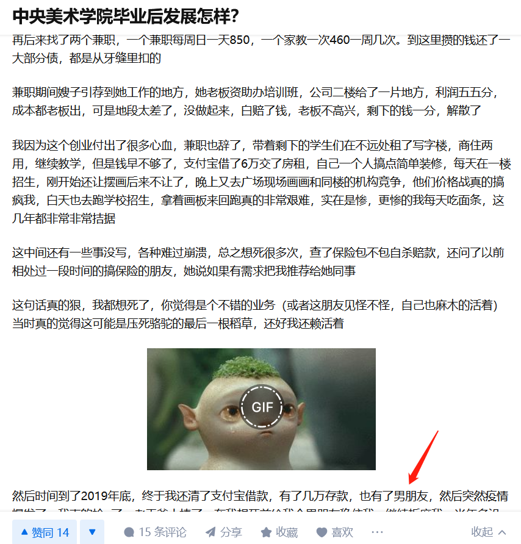
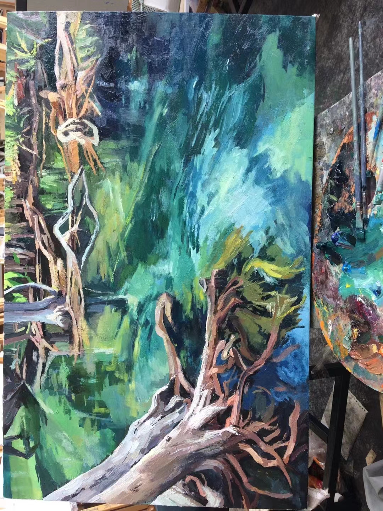
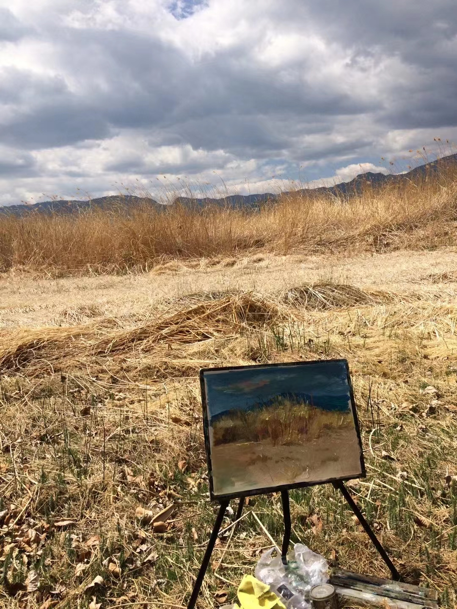

我的生平（四）
高二集训
杭州国美空间有个二十多岁左右的男性，我忘记他的名字叫什么了，就叫小A吧。
小A想要考中央美院。中央美院的录取规则是首先文化分要满足最低要求，然后文化分+艺考分 = 总分，总分再按由高到低的顺序排列，按照排名的名额录取（比如说前三十名）。小A的艺考分很高，是第一名还是第几名，但是他的文化分太低，没有满足央美的最低要求，于是复读了好几年。我高考的那年，他已经是高考复读的第好多次了。他在高考结束后的夏天，在本培训班当培训班老师挣钱，来年再参加高考。
自从我考上大学，就没跟他们联系过了。小A过得好不好我也不知道。
一个复读的人
以下回答非小A本人，仅供参考
复读的本质就是没卷赢。复读考了6年，读本科再读5年，就是11年。如果再读研，就是+3年，14年。可能35岁都超过了，这把年纪，哪怕有学历，一般大学都不要的，更别提私企了。


一个卷赢学历的人（央美本硕，回老家当大学老师）
https://www.zhihu.com/question/286181476/answer/1405158981

一个创业失败的人（开画室）
小时候靠家长养，长大了就靠丈夫。
毕业6年了，先创业失败，负债，然后还债，第六年才赚了5万多。但凡做餐厅服务员, 做工地小工, 都不可能6年才赚5万多块
https://www.zhihu.com/question/286181476/answer/2540642355


针对纯艺术的学生
在我十几岁的时候，美术老师说，学艺术能上更好的大学。虽然艺考的时候吃了不少的苦，就业怎么样不好说，但是我确实上了更好的大学（卷赢了的那帮人之一）。
我不想劝小孩子不要学艺术。十几岁的年纪，谁会相信自己只是个普通人呢。
艺术是能赚大钱。但是你也配？你的爸妈是谁？你有什么别人做不到的核心技能？什么，你就只会画画？你比照相机画的还像？呵呵……
美术教育行业明明是纯艺术的最后一道防线。但是随着少子化，未来幼儿园、中学、大学，有一半的学校会破产，美术老师的未来又在哪里？
我好像看到一群羊在往山上爬，牧羊人赶着他们一群一群的往上走。它们咩咩咩的叫着，开心的尾巴一甩一甩的。它们从来不问，我们去哪呀？为什么要到那里去啊？
纯艺术浪费你的时间，一年又一年。蓦然回首，青春的年华已经不在。
女生还好，自带性价值和生育价值。男生学艺术，尤其是自身阶级不高的男性，又学了无法赚钱的纯艺，那真的是死局。
他们说艺术我都想笑, 他们比我一个学了十年纯艺术的人还能懂艺术吗?
他们说穷人不要学艺术, 那有钱人就可以学艺术了? 不只是学艺术, 有钱人就算想上火星呢, 也没问题啊.
上一篇：读朗朗自传有感
我的同学们
我的室友A : A是一个古典美女，她爱好钢琴，家庭殷实。平常喜欢看看小说，喜欢看夏达的《长歌行》漫画。她是个宅女，而且从来没有谈过男朋友。依靠相亲找一个门当户对的男人，只要运气好，应该能过上全职太太的幸福人生吧。她画的画挺一般的，虽然我大部分时间都在学安全，但是还没我画的强。但是就业的话，可以说除了美术老师找不到对口工作。
我的室友B: B的家庭很神秘，但是很有钱。大学的时候就开始学雅思，毕业就去英国读研了。大三的时候我们在北京聚了一次，当时我在实习，她在参加培训。英国的学费和生活费是起码40万一年。也许毕业后回家继承家业。由于不是一个阶级，也没有太多共同话题，毕业以后我们就再没有联系过了。
我的室友C: C的家庭属于中产，家里有好几套房子，但是也不属于大富大贵的家庭。她画的画很棒，比我强多了，她当过班长，拿过奖学金，保研去了深圳大学继续读研。她工作是游戏行业的原画师。我们在深圳聚过几次，她的工作比较辛苦，工作是大小周放假。C是一个理想主义者，也是一个不婚主义者。个人我很喜欢C的性格。
我的室友D: D在大学读过双学位，学的是英语。她在深圳找的工作是幼儿英语老师。双减政策以后，对教培行业打击太大，然后就失业了。
我的室友E: E是甘肃兰州人，她毕业以后去意大利留学了。
我的男性同学E: E特别喜欢油画艺术，大二的时候，他说要开淘宝店卖油画。在创业。希望他创业成功。
我的男性同学F: F的爸爸是艺术行业中国画的大拿。
我的男性同学G: G的家庭很有钱，具体有钱到啥样想象不出来。只记得他说他妈妈喜欢收藏艺术品。
我的男性同学H: H学了双专业会计行业。他家里不是很有钱，感觉跟我差不多吧。估计毕业以后去干会计了吧。
我个人不是喜欢交际的性格，能记得的同学寥寥可数。这就是能回忆起的所有同学了。
虽然我总说学纯艺术的非富即贵，但是还是混入了不少理想主义者和我这种小镇做题家（穷人）。绝大部分穷人都去各行各业谋生了，在闲暇的一天，会拿起画笔，回忆起那些逝去的青春吧。
我的画
我17岁那年，艺考校招考过某校全省前三。16岁的时候，画室有一次举办绘画展览，我的画是放在最中心、最醒目的位置来展出的。
但是上了大学，我的绘画技术一日千里的退步。绘画是个苦活累活，一日不画就会退步。以下的画远远不是我巅峰时候的水平。
我的大部分作品都由于不懂备份、不懂灾备而遗失了。比如说手机被偷、网盘关闭了、搬家了、硬盘摔了、不小心格式化等等
我对艺术是又爱又恨，如果不爱，也不能坚持十年了吧。但是我再也不会拿起画笔了，因为毕业以后真的很忙，忙于学习、考证、赚钱、工作、做饭、健身等等。
还记得当时我同学叫我去做兼职，我去打听了一下美术老师的收入。在成都，三千多一个月。三千多也就是我现在三天的工资而已。
我接受不了因为艺术而贫穷的生活，我本可以有更好的生活。



